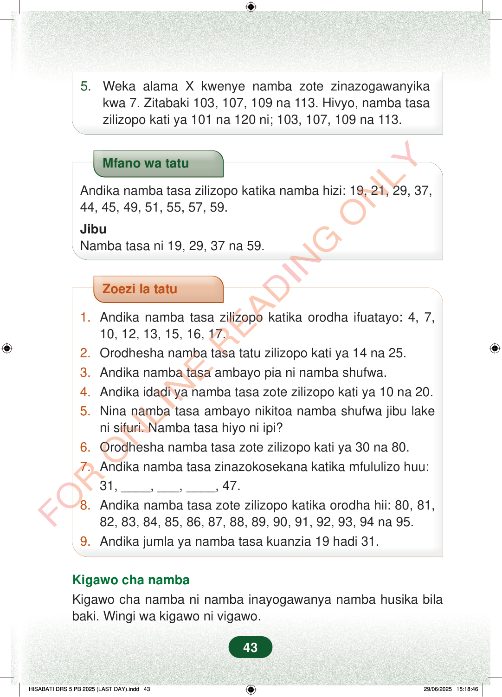

5.Weka alama X kwenye namba zote zinazogawanyikakwa 7. Zitabaki 103, 107, 109 na 113. Hivyo, namba tasazilizopo kati ya 101 na 120 ni; 103, 107, 109 na 113.Mfano wa tatuAndika namba tasa zilizopo katika namba hizi: 19, 21, 29, 37,44, 45, 49, 51, 55, 57, 59.JibuNamba tasa ni 19, 29, 37 na 59.Zoezi la tatu1.Andika namba tasa zilizopo katika orodha ifuatayo: 4, 7,10, 12, 13, 15, 16, 17.2.Orodhesha namba tasa tatu zilizopo kati ya 14 na 25.3.Andika namba tasa ambayo pia ni namba shufwa.4.Andika idadi ya namba tasa zote zilizopo kati ya 10 na 20.5.Nina namba tasa ambayo nikitoa namba shufwa jibu lakeni sifuri. Namba tasa hiyo ni ipi?6.Orodhesha namba tasa zote zilizopo kati ya 30 na 80.7.Andika namba tasa zinazokosekana katika mfululizo huu:31, ____, ___, ____, 47.8.Andika namba tasa zote zilizopo katika orodha hii: 80, 81,82, 83, 84, 85, 86, 87, 88, 89, 90, 91, 92, 93, 94 na 95.9.Andika jumla ya namba tasa kuanzia 19 hadi 31.Kigawo cha nambaKigawo cha namba ni namba inayogawanya namba husika bilabaki. Wingi wa kigawo ni vigawo.43
5. Weka alama X kwenye namba zote zinazogawanyika kwa 7. Zitabaki 103, 107, 109 na 113. Hivyo, namba tasa zilizopo kati ya 101 na 120 ni; 103, 107, 109 na 113.
Mfano wa tatu
Andika namba tasa zilizopo katika namba hizi: 19, 21, 29, 37, 44, 45, 49, 51, 55, 57, 59.
Jibu Namba tasa ni 19, 29, 37 na 59.
Zoezi la tatu
1. Andika namba tasa zilizopo katika orodha ifuatayo: 4, 7, 10, 12, 13, 15, 16, 17. 2. Orodhesha namba tasa tatu zilizopo kati ya 14 na 25. 3. Andika namba tasa ambayo pia ni namba shufwa. 4. Andika idadi ya namba tasa zote zilizopo kati ya 10 na 20. 5. Nina namba tasa ambayo nikitoa namba shufwa jibu lake ni sifuri. Namba tasa hiyo ni ipi? 6. Orodhesha namba tasa zote zilizopo kati ya 30 na 80. 7. Andika namba tasa zinazokosekana katika mfululizo huu: 31, ____, ___, ____, 47. 8. Andika namba tasa zote zilizopo katika orodha hii: 80, 81, 82, 83, 84, 85, 86, 87, 88, 89, 90, 91, 92, 93, 94 na 95. 9. Andika jumla ya namba tasa kuanzia 19 hadi 31.
Kigawo cha namba Kigawo cha namba ni namba inayogawanya namba husika bila baki. Wingi wa kigawo ni vigawo.
43
Mfano wa tatu unaonyesha orodha ya namba 19, 21, 29, 37, 44, 45, 49, 51, 55, 57 na 59. Jibu linaonyesha namba tasa ni 19, 29, 37 na 59.Mfano wa tatuAndika namba tasa zilizopo katika namba hizi: 19, 21, 29, 37, 44, 45, 49, 51, 55, 57, 59.JibuNamba tasa ni 19, 29, 37 na 59.Kigawo cha nambaKigawo cha namba ni namba inayogawanya namba husika bila baki.Wingi wa kigawo ni vigawo.